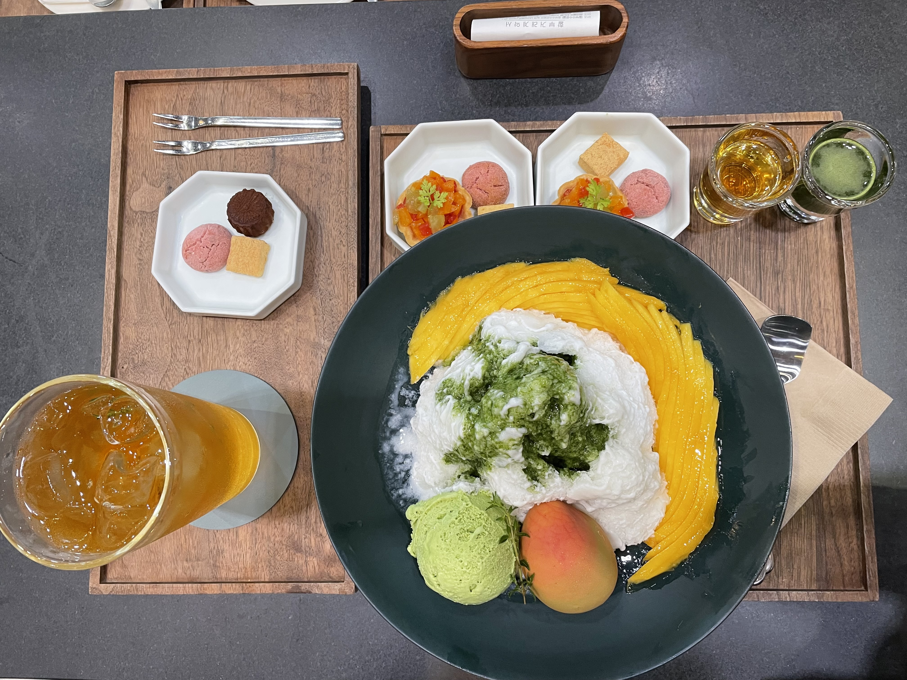

About
I visited South Korea last summer because I had a business analyst summer internship at a fintech startup called White Playground. It was my first time ever going to a foreign country without any family or friends and living on my own. I lived in an airbnb that was about 30 minutes from my workplace, but was known to be in a good neighborhood and close to famous destinations in Seoul. I was super excited to go on this trip because I would have the time to explore Seoul, South Korea on my own. My cousin from Hong Kong was also planning to come over and join me in Seoul at the end of my internship so we could hangout and explore together.
Highlights of the Trip

- The food in Korea is amazing!! I loved buying Korean Fried Chieken (KFC) with my cousin to eat at home and have a night in to relax. The korean barbecue is also really good! Some dishes that I loved are 삼겹살 (samgyeopsal) or grilled pork belly and 갈비살 (galbisal) or beef rib fingers. I also had a family friend in Seoul and was fortunate enough that they treated me to mango 빙수 (bingsu) or shaved ice in the Four Seasons hotel that was incredible!
- I visited Jeju Island with my dad. The island is famous for their clementines and black pork belly. They had many street markets that were filled with stalls to buy food and souvenirs and everything was super cheap! The coastal view was beautiful and we drove all along the coast and stopped by different places to take pictures!
- My cousin and I took a trip to Lotte World, which is an indoor and outdoor amusement park. An indoor amusement park was something new and I loved it because I have seen Lotte World in youtube videos and netflix shows before, and it was amazing to be able to visit it in person!
Top 3 Places I recommend
- Hongdae
- This is a famous neighborhood in Seoul, now very well known to be a center of a music, art and culture because it surrounds the Hongik University. I loved coming to visit this neighborhood and went very frequently because of how lively it is. There were always people around, especially at night and the streets were always very bright. There was abundant number of shops, gastropubs, and late night restaurants to visit. It was also very common for dance groups to “busk”, which is when dance groups perform on the street at certain locations. I got to watch multiple groups dance and sing and it was really fun and different from California.
- Bukchon Hanok Village
- This is a famous residential neighborhood in the Jongno district that is filled with many traditional Korean homes from the Joseon dynasty that were restored for people to live in now. I loved how this tourist destination is also a living area for Korean residents still. It reminds me of the Painted Ladies landmark in San Francisco that are also restored Victorian homes that are lived-in still today.
- Gangnam Underground Shopping Center
- This was also known as the Bus Terminal Shopping Center since it was connected to a Bus Terminal. This was a underground shopping mall that spanned over 200 shops. I really enjoyed visitng here because this isn’t a thing in the U.S. Often times, we have dedicated shopping malls or shops would be above ground in a plaza. However, the Gangnam Underground Shopping Center were smaller boutique-like stores that filled up an entire underground area.